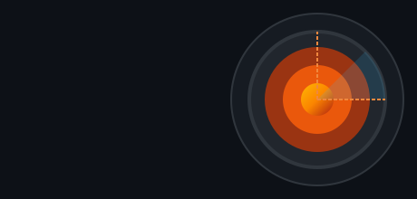

A.B.Y.S.S
Batimetría & Oceanografía
Introducción

¿Alguna vez has mirado el océano y te has preguntado qué hay allá abajo, en lo más profundo? A simple vista, el mar parece solo una enorme masa de agua azul y plana. Pero si pudiéramos quitarle toda el agua como si abriéramos el tapón de una bañera gigante descubriríamos un mundo asombroso. Bajo las olas hay montañas más altas que el Everest, cañones profundos, volcanes submarinos y extensas llanuras donde nunca entra la luz del sol. A la ciencia que se encarga de medir qué tan profundo es el océano y de hacer mapas de todo ese relieve oculto la llamamos batimetría. Que viene de dos palabras griegas antiguas: bathys (profundo) y metron (medida). Es decir, medir las profundidades.
Hoy en día, basta con mirar una pantalla o tocar un teléfono para ver un mapa en 3D del suelo marino. Pero esto no siempre fue así. Durante miles de años, el fondo del océano fue el misterio más grande del planeta Tierra.
Para resolverlo, la humanidad tuvo que emprender una aventura increíble que duró siglos: esta comenzó con los marineros antiguos, que lanzaban al agua varas de madera o cuerdas con pesas de plomo untadas con grasa para tocar el suelo y saber si sus barcos podían pasar sin chocar hasta el día de hoy en el que cartografiamos el mar desde el espacio usando satélites, láseres y robots submarinos autónomos. Acompañanos en este viaje a través del tiempo para descubrir cómo los seres humanos lograron construir instrumentos tecnológicos para revelar los secretos del fondo del mar.